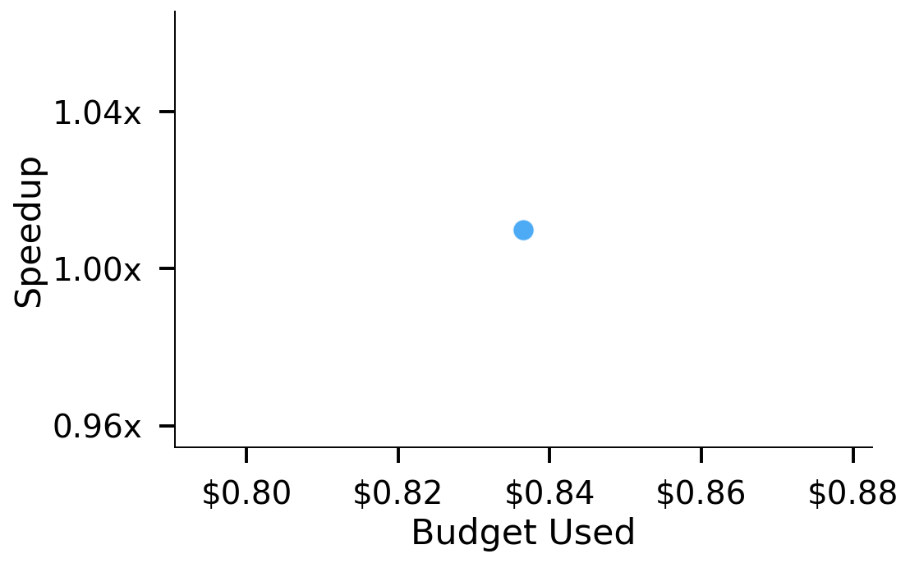
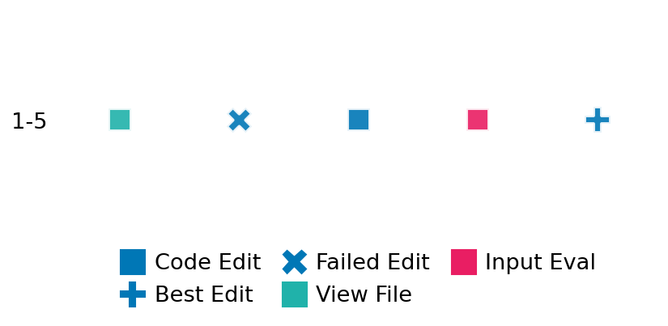

SETTING:
You're an autonomous programmer tasked with solving a specific problem. You are to use the commands defined below to accomplish this task. Every message you send incurs a cost—you will be informed of your usage and remaining budget by the system.
You will be evaluated based on the best-performing piece of code you produce, even if the final code doesn't work or compile (as long as it worked at some point and achieved a score, you will be eligible).
Apart from the default Python packages, you have access to the following additional packages:
- cryptography
- cvxpy
- cython
- dace
- dask
- diffrax
- ecos
- faiss-cpu
- hdbscan
- highspy
- jax
- networkx
- numba
- numpy
- ortools
- pandas
- pot
- psutil
- pulp
- pyomo
- python-sat
- pythran
- scikit-learn
- scipy
- sympy
- torch
YOUR TASK:
Your objective is to define a class named `Solver` in `solver.py` with a method:
```
class Solver:
def solve(self, problem, **kwargs) -> Any:
"""Your implementation goes here."""
...
```
IMPORTANT: Compilation time of your init function will not count towards your function's runtime.
This `solve` function will be the entrypoint called by the evaluation harness. Strive to align your class and method implementation as closely as possible with the desired performance criteria.
For each instance, your function can run for at most 10x the reference runtime for that instance. Strive to have your implementation run as fast as possible, while returning the same output as the reference function (for the same given input). Be creative and optimize your approach!
Your messages should include a short thought about what you should do, followed by a _SINGLE_ command. The command must be enclosed within ``` and ```, like so:
<Reasoning behind executing the command>
```
<command>
```
IMPORTANT: Each set of triple backticks (```) must always be on their own line, without any other words or anything else on that line.
Here are the commands available to you. Ensure you include one and only one of the following commands in each of your responses:
- `edit`: Replace a range of lines with new content in a file. This is how you can create files: if the file does not exist, it will be created. Here is an example:
```
edit
file: <file_name>
lines: <start_line>-<end_line>
---
<new_content>
---
```
The command will:
1. Delete the lines from <start_line> to <end_line> (inclusive)
2. Insert <new_content> starting at <start_line>
3. If both <start_line> and <end_line> are 0, <new_content> will be prepended to the file
Example:
edit
file: solver.py
lines: 5-7
---
def improved_function():
print("Optimized solution")
---
- `ls`: List all files in the current working directory.
- `view_file <file_name> [start_line]`: Display 100 lines of `<file_name>` starting from `start_line` (defaults to line 1).
- `revert`: Revert the code to the best-performing version thus far.
- `reference <string>`: Query the reference solver with a problem and receive its solution. If the problem's input is a list, this command would look like:
```
reference [1,2,3,4]
```
- `eval_input <string>`: Run your current solver implementation on the given input. This is the only command that shows stdout from your solver along with both solutions. Example:
```
eval_input [1,2,3,4]
```
- `eval`: Run evaluation on the current solution and report the results.
- `delete`: Delete a range of lines from a file using the format:
```
delete
file: <file_name>
lines: <start_line>-<end_line>
The command will delete the lines from <start_line> to <end_line> (inclusive)
Example:
delete
file: solver.py
lines: 5-10
```
- `profile <filename.py> <input>`: Profile your currently loaded solve method's performance on a given input. Shows the 25 most time-consuming lines. Requires specifying a python file (e.g., `solver.py`) for validation, though profiling runs on the current in-memory code.
Example:
```
profile solver.py [1, 2, 3]
```
- `profile_lines <filename.py> <line_number1, line_number2, ...> <input>`: Profiles the chosen lines of the currently loaded code on the given input. Requires specifying a python file for validation.
Example:
```
profile_lines solver.py 1,2,3 [1, 2, 3]
```
**TIPS:**
After each edit, a linter will automatically run to ensure code quality. If there are critical linter errors, your changes will not be applied, and you will receive the linter's error message. Typically, linter errors arise from issues like improper indentation—ensure your edits maintain proper code formatting.
**Cython Compilation:** Edits creating or modifying Cython (`.pyx`) files will automatically trigger a compilation attempt (requires a `setup.py`). You will be notified if compilation succeeds or fails. If it fails, the edit to the `.pyx` file will be automatically reverted.
If the code runs successfully without errors, the in-memory 'last known good code' will be updated to the new version. Following successful edits, you will receive a summary of your `solve` function's performance compared to the reference.
If you get stuck, try reverting your code and restarting your train of thought.
Do not put an if __name__ == "__main__": block in your code, as it will not be ran (only the solve function will).
Keep trying to better your code until you run out of money. Do not stop beforehand!
**GOALS:**
Your primary objective is to optimize the `solve` function to run as as fast as possible, while returning the optimal solution.
You will receive better scores the quicker your solution runs, and you will be penalized for exceeding the time limit or returning non-optimal solutions.
Below you find the description of the task you will have to solve. Read it carefully and understand what the problem is and what your solver should do.
**TASK DESCRIPTION:**
Cyclic Independent Set Task:
Given a cyclic graph independent set problem instance defined by a fixed 7-node cyclic graph
and an exponent n, the task is to compute an optimal independent set in the n‑th strong product
of the cyclic graph.
The goal is to determine an independent set (a set of vertices where no two vertices are adjacent)
that matches known optimal constructions. A valid solution is a list of n‑tuples (each tuple of
integers), where each tuple represents a vertex in the independent set.
Input: A tuple (7, n), where 7 is the fixed number of nodes in the base cyclic graph and n is an
integer controlling the problem scale (the exponent of the strong product).
Example input:
(7, 5)
Output: A list of 5‑tuples, with each tuple representing a vertex in the independent set of the
5‑th strong product of a 7‑node cyclic graph.
Example output:
[(0, 1, 3, 2, 6), (2, 4, 0, 5, 1), ...]
Category: graph
Below is the reference implementation. Your function should run much quicker.
import itertools
import numba
import numpy as np
from numba.typed import List
| 01: def _priority( el, num_nodes, n):
| 02: """
| 03: Compute the priority for a candidate node (represented as an n-tuple) in the
| 04: independent set construction.
| 05:
| 06: This function clips the candidate values to ensure they do not exceed (num_nodes - 3)
| 07: and then computes a score based on a weighted sum and modular arithmetic.
| 08: Higher scores indicate a higher priority for inclusion.
| 09:
| 10: Args:
| 11: el (tuple): An n-tuple candidate.
| 12: num_nodes (int): Number of nodes in the base cyclic graph.
| 13: n (int): Exponent (power) of the strong product.
| 14:
| 15: Returns:
| 16: float: The computed priority score.
| 17: """
| 18: el_clipped = np.clip(el, a_min=None, a_max=num_nodes - 3)
| 19: values = 2 * np.array(list(itertools.product(range(1, n), repeat=n)))
| 20: multipliers = np.array([num_nodes**i for i in range(n - 1, -1, -1)], dtype=np.int32)
| 21: x = np.sum((1 + values + el_clipped) * multipliers, axis=-1)
| 22: return np.sum(x % (num_nodes - 2), dtype=float)
| 23:
| 24:
| 25: def solve(self, problem: tuple[int, int]) -> list[tuple[int, ...]]:
| 26: """
| 27: Solve the cyclic graph independent set problem.
| 28:
| 29: The task is to compute an optimal independent set in the n‑th strong product
| 30: of a cyclic graph with num_nodes nodes. The solver uses a greedy algorithm that:
| 31: 1. Enumerates all candidate vertices (as n‑tuples).
| 32: 2. Computes a priority score for each candidate using the discovered priority function.
| 33: 3. Iteratively selects the candidate with the highest score and "blocks" conflicting nodes.
| 34:
| 35: This approach has been verified to match known optimal constructions.
| 36:
| 37: Args:
| 38: problem (tuple): A tuple (num_nodes, n) representing the problem instance.
| 39:
| 40: Returns:
| 41: List: A list of n-tuples representing the vertices in the independent set.
| 42:
| 43:
| 44: NOTE: Your solution must pass validation by:
| 45: 1. Returning correctly formatted output
| 46: 2. Having no NaN or infinity values
| 47: 3. Matching expected results within numerical tolerance
| 48: """
| 49: num_nodes, n = problem
| 50:
| 51: # Precompute all candidate vertices.
| 52: children = np.array(list(itertools.product(range(num_nodes), repeat=n)), dtype=np.int32)
| 53: # Compute initial scores for all candidates.
| 54: scores = np.array([self._priority(tuple(child), num_nodes, n) for child in children])
| 55: # All possible shifts used for blocking.
| 56: to_block = np.array(list(itertools.product([-1, 0, 1], repeat=n)), dtype=np.int32)
| 57: # Precompute powers for index conversion.
| 58: powers = num_nodes ** np.arange(n - 1, -1, -1)
| 59:
| 60: # Call the accelerated numba solver.
| 61: selected_indices = solve_independent_set_numba(
| 62: children, scores, to_block, powers, num_nodes
| 63: )
| 64:
| 65: # Return the selected candidates as a list of tuples.
| 66: return [tuple(children[i]) for i in selected_indices]
| 67:
This function will be used to check if your solution is valid for a given problem. If it returns False, it means the solution is invalid:
import itertools
import numba
import numpy as np
from numba.typed import List
| 01: def is_solution( problem: tuple[int, int], solution: list[tuple[int, ...]]) -> bool:
| 02: """
| 03: Check if the provided solution is a valid and optimal independent set.
| 04:
| 05: A valid independent set must:
| 06: 1. Contain only valid vertices (n-tuples with values in range [0, num_nodes-1])
| 07: 2. Ensure no two vertices in the set are adjacent in the strong product graph
| 08:
| 09: Optimality is checked by comparing the size of the solution with the solver's solution.
| 10:
| 11: Args:
| 12: problem (Tuple[int, int]): The problem instance (num_nodes, n).
| 13: solution (List[Tuple[int, ...]]): The proposed independent set.
| 14:
| 15: Returns:
| 16: bool: True if the solution is valid and optimal, False otherwise.
| 17: """
| 18: num_nodes, n = problem
| 19:
| 20: # Check if all vertices are valid n-tuples
| 21: for vertex in solution:
| 22: if len(vertex) != n:
| 23: return False
| 24: for val in vertex:
| 25: if val < 0 or val >= num_nodes:
| 26: return False
| 27:
| 28: # Check if the set is independent (no adjacent vertices)
| 29: for i, v1 in enumerate(solution):
| 30: for j, v2 in enumerate(solution):
| 31: if i < j: # Avoid checking the same pair twice
| 32: # Check if v1 and v2 are adjacent in the strong product
| 33: adjacent = True
| 34: for k in range(n):
| 35: d = min((v1[k] - v2[k]) % num_nodes, (v2[k] - v1[k]) % num_nodes)
| 36: if d > 1: # Not adjacent in the cyclic graph
| 37: adjacent = False
| 38: break
| 39: if adjacent:
| 40: return False
| 41:
| 42: # Check optimality by comparing with the solver's solution
| 43: optimal_solution = solve(problem)
| 44:
| 45: # In this problem, optimality is defined by the size of the independent set
| 46: # (larger is better)
| 47: return len(solution) >= len(optimal_solution)
| 48:
 AlgoTuner Trajectory
AlgoTuner Trajectory
AlgoTune Task:
cyclic_independent_set
Model:
Claude Opus 4
Speedup
1.009x
Total Budget
$1.00
Initial System Prompt
AlgoTune Task Description
Cyclic Independent Set Task: Given a cyclic graph independent set problem instance defined by a fixed 7-node cyclic graph and an exponent n, the task is to compute an optimal independent set in the n‑th strong product of the cyclic graph. The goal is to determine an independent set (a set of vertices where no two vertices are adjacent) that matches known optimal constructions. A valid solution is a list of n‑tuples (each tuple of integers), where each tuple represents a vertex in the independent set. Input: A tuple (7, n), where 7 is the fixed number of nodes in the base cyclic graph and n is an integer controlling the problem scale (the exponent of the strong product). Example input: (7, 5) Output: A list of 5‑tuples, with each tuple representing a vertex in the independent set of the 5‑th strong product of a 7‑node cyclic graph. Example output: [(0, 1, 3, 2, 6), (2, 4, 0, 5, 1), ...] Category: graph
Reference Implementation
import itertools
import numba
import numpy as np
from numba.typed import List
def _priority( el, num_nodes, n):
"""
Compute the priority for a candidate node (represented as an n-tuple) in the
independent set construction.
This function clips the candidate values to ensure they do not exceed (num_nodes - 3)
and then computes a score based on a weighted sum and modular arithmetic.
Higher scores indicate a higher priority for inclusion.
Args:
el (tuple): An n-tuple candidate.
num_nodes (int): Number of nodes in the base cyclic graph.
n (int): Exponent (power) of the strong product.
Returns:
float: The computed priority score.
"""
el_clipped = np.clip(el, a_min=None, a_max=num_nodes - 3)
values = 2 * np.array(list(itertools.product(range(1, n), repeat=n)))
multipliers = np.array([num_nodes**i for i in range(n - 1, -1, -1)], dtype=np.int32)
x = np.sum((1 + values + el_clipped) * multipliers, axis=-1)
return np.sum(x % (num_nodes - 2), dtype=float)
def solve(self, problem: tuple[int, int]) -> list[tuple[int, ...]]:
"""
Solve the cyclic graph independent set problem.
The task is to compute an optimal independent set in the n‑th strong product
of a cyclic graph with num_nodes nodes. The solver uses a greedy algorithm that:
1. Enumerates all candidate vertices (as n‑tuples).
2. Computes a priority score for each candidate using the discovered priority function.
3. Iteratively selects the candidate with the highest score and "blocks" conflicting nodes.
This approach has been verified to match known optimal constructions.
Args:
problem (tuple): A tuple (num_nodes, n) representing the problem instance.
Returns:
List: A list of n-tuples representing the vertices in the independent set.
NOTE: Your solution must pass validation by:
1. Returning correctly formatted output
2. Having no NaN or infinity values
3. Matching expected results within numerical tolerance
"""
num_nodes, n = problem
# Precompute all candidate vertices.
children = np.array(list(itertools.product(range(num_nodes), repeat=n)), dtype=np.int32)
# Compute initial scores for all candidates.
scores = np.array([self._priority(tuple(child), num_nodes, n) for child in children])
# All possible shifts used for blocking.
to_block = np.array(list(itertools.product([-1, 0, 1], repeat=n)), dtype=np.int32)
# Precompute powers for index conversion.
powers = num_nodes ** np.arange(n - 1, -1, -1)
# Call the accelerated numba solver.
selected_indices = solve_independent_set_numba(
children, scores, to_block, powers, num_nodes
)
# Return the selected candidates as a list of tuples.
return [tuple(children[i]) for i in selected_indices]Best AlgoTuner-Generated Code
solver.py
import itertools
import numba
import numpy as np
@numba.njit
def solve_independent_set_numba(children, scores, to_block, powers, num_nodes):
"""
Numba-accelerated greedy algorithm for finding an independent set.
"""
n_candidates = len(children)
n = len(children[0])
blocked = np.zeros(n_candidates, dtype=np.bool_)
selected_indices = []
while True:
# Find the candidate with the highest score that is not blocked
best_idx = -1
best_score = -np.inf
for i in range(n_candidates):
if not blocked[i] and scores[i] > best_score:
best_score = scores[i]
best_idx = i
if best_idx == -1:
break
# Select this candidate
selected_indices.append(best_idx)
selected = children[best_idx]
# Block all conflicting candidates
for shift in to_block:
# Compute neighbor with cyclic wrapping
neighbor = np.empty(n, dtype=np.int32)
for j in range(n):
neighbor[j] = (selected[j] + shift[j]) % num_nodes
# Convert neighbor to index
idx = 0
for j in range(n):
idx += neighbor[j] * powers[j]
# Block this neighbor
blocked[idx] = True
return selected_indices
class Solver:
def _priority(self, el, num_nodes, n):
"""
Compute the priority for a candidate node.
"""
el_clipped = np.clip(el, a_min=None, a_max=num_nodes - 3)
values = 2 * np.array(list(itertools.product(range(1, n), repeat=n)))
multipliers = np.array([num_nodes**i for i in range(n - 1, -1, -1)], dtype=np.int32)
x = np.sum((1 + values + el_clipped) * multipliers, axis=-1)
return np.sum(x % (num_nodes - 2), dtype=float)
def solve(self, problem, **kwargs):
"""
Solve the cyclic graph independent set problem.
"""
num_nodes, n = problem
# Precompute all candidate vertices
children = np.array(list(itertools.product(range(num_nodes), repeat=n)), dtype=np.int32)
# Compute initial scores for all candidates
scores = np.array([self._priority(tuple(child), num_nodes, n) for child in children])
# All possible shifts used for blocking
to_block = np.array(list(itertools.product([-1, 0, 1], repeat=n)), dtype=np.int32)
# Precompute powers for index conversion
powers = num_nodes ** np.arange(n - 1, -1, -1)
# Call the accelerated numba solver
selected_indices = solve_independent_set_numba(
children, scores, to_block, powers, num_nodes
)
# Return the selected candidates as a list of tuples
return [tuple(children[i]) for i in selected_indices]Speedup vs Budget Plot
Speedup vs Budget

Action Sequence
